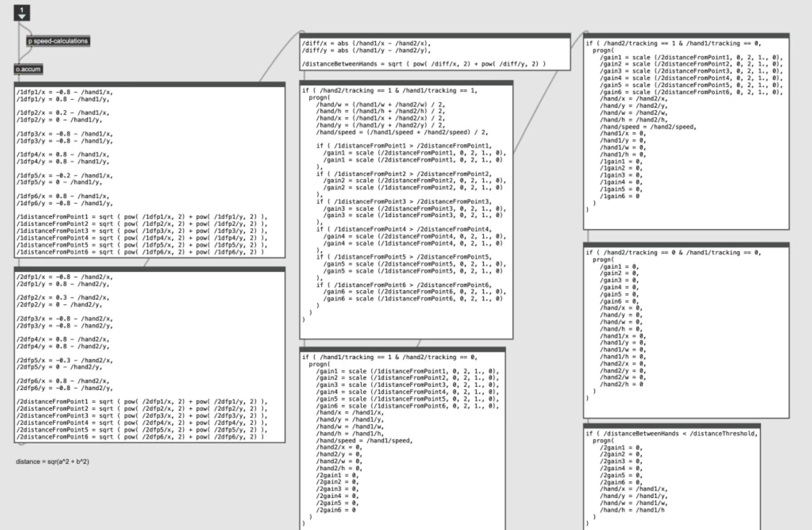
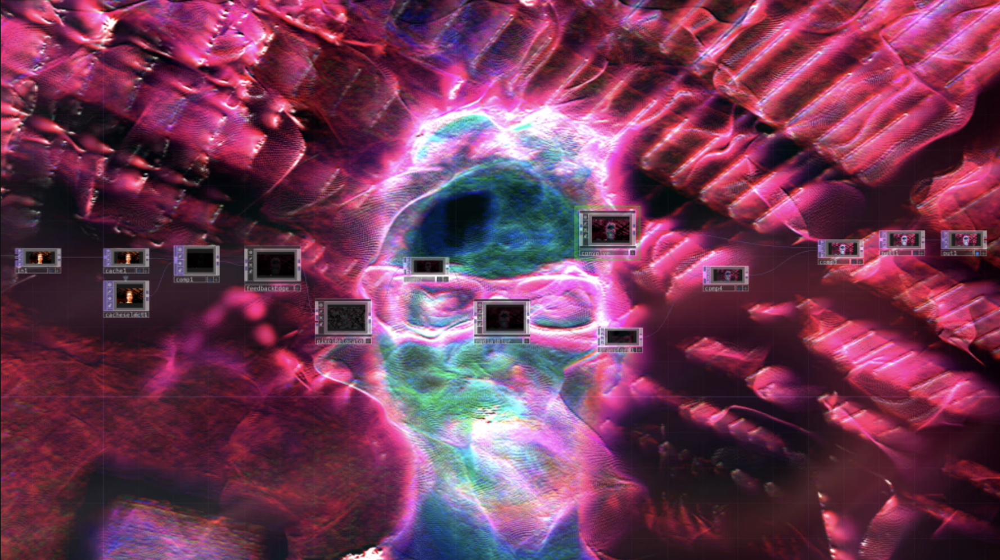

This short post is gonna be about the technical aspects of the performance. The one after this will be dramaturgical.
I left off talking about switching from a canvas-based system to one that solely tracks hands. Here's how I went from hands to sound and projections.
Blob-tracking
Imagine a webcam looking at you. It “sees” a flat 2-dimensional plane of pixels, and each pixel is a color. Let’s bring that image into Isadora (and later, TouchDesigner). If you want the computer to make sense of what it’s “seeing”, you have to do a little analysis on it. That’s where blob-tracking algorithms come in. This algorithm groups familiarly-colored pixels together and distinguish them from other groups of similarly-colored pixels. In this case, I wanted the computer to see 2 hands. In order for it to do this, I needed to make the hands a distinct color from the background and tell the computer to prioritize that color. This can be done through adjusting contrast and chroma-keying.
Hands to Sound
Once the computer can see the hands, it draws rectangles around them. You can see them in this test-screenshot.
You can see a larger hand on the left, and a smaller hand on the right.
We can then see the rectangles’ location (the center X,Y coordinates of each rectangle), and how big the rectangle is (height, width). The following, in a nutshell, is how I transformed the hand position data to sound.

Screenshot of a deep layer of my MaxMSP program, coded in ODOT (nods to Rama Gottfried, John MacCallum, and CNMAT)
Basically, what's happening is:
I defined 2 imaginary triangles on the X,Y plane. One on the left side, one on the right side. Each triangle has 3 imaginary points, so 6 points total; 2 groups of 3.
Calculate the distance of each hand from each point.
Map that distance to the loudness on a granulator. As your hand gets closer to a point, the granulator assigned to that point gets louder.
-
Create dozens of presets using a set of 3 granulators. Assign granulator to a soundfile, and use the (height, width) data to control how each granulator behaves.
Run 2 presets at a time. You end up getting a multilayered soundscape and you can swap out presets independently without totally breaking the sound.
Hands to Projections
With the sound created, I sent the audio signal from MaxMSP to TouchDesigner. In TouchDesigner, I ran the signal through some basic filters to get general energy levels for the low, middle, and high parts of the signal’s spectrum.

self-portrait on my porch showing a simple TouchDesigner preset
All of the visuals for this project were generated from the webcam feed. After isolating my hands in the image, I created dozens of presets that all distorted my hands in different ways, using the data from the audio signal to control some of these distortions.
Keep it Moving
I struggled a lot with structure in this project. There needed to be a balance of status, activity, momentum, and progression. Instead of simply creating dozens of presents that would randomly cycle in and out of each other, I decided to group them into 3 main sections that would be triggered by a simple timer that would start at the beginning of the piece and guide the computer through each section:
Section 1: begin with stable, ambient, long tones,
Section 2: move to more active sounds, machines, percussive, noise
Section 3: heavy drums, bass, beats, aggressive glitch
Within each section, I needed a way to change presets without touching the computer. Rather than using a timer, I decided to use a counter that would be triggered by the velocity of my hands. Basically, every time I move my hands over a specified speed, a counter is triggered. The counter’s maximum is determined by a random number generator, and when the maximum is reached, the current preset is faded out, and a new preset fades in. It’s not an instantaneous change, so I don’t think an audience member could deduce how the mechanism worked, but it gave me the ability to control the progression of sounds to a limited degree.
In the next and final entry, I’ll discuss dramaturgy. I’ll go into the mask, the character, the movements, and how I book ended the performance.